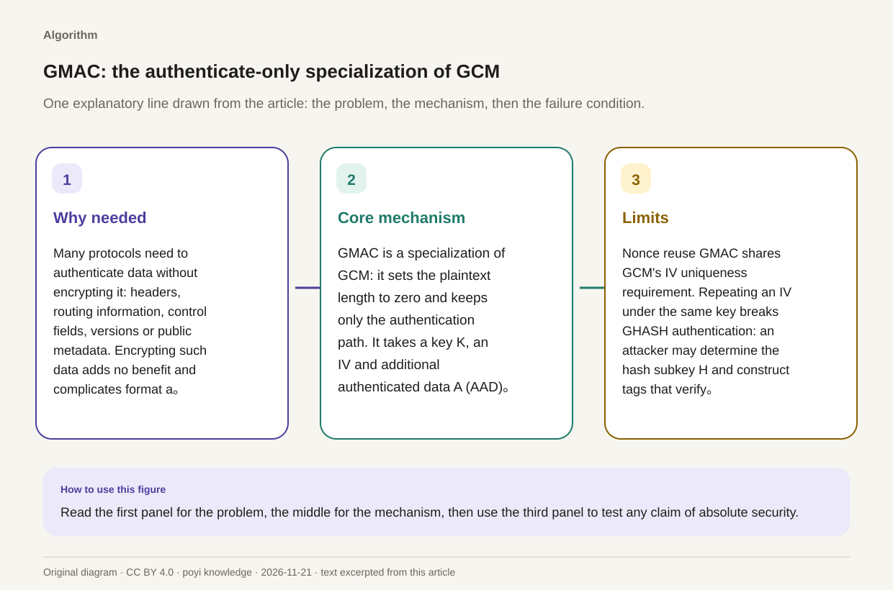
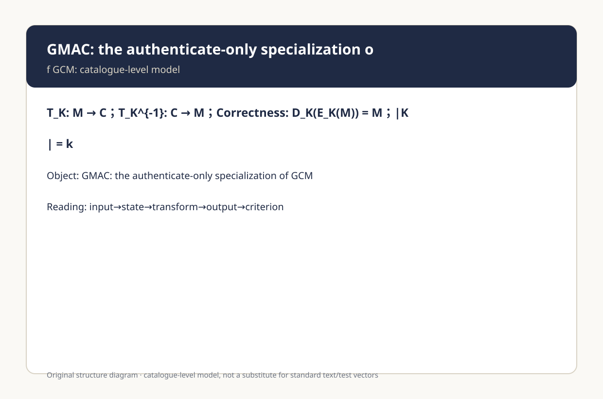

Principles
Algorithm: GMAC (GMAC 认证模式). GMAC is a specialization of GCM: it sets the plaintext length to zero and keeps only the authentication path. It takes a key K, an IV and additional authenticated data A (AAD), and outputs an authentication tag T with no ciphertext. GMAC reuses GCM's components. It first computes the hash subkey H = E_K(0^128), then builds the pre-counter block J0 from the IV length:
if len(IV) = 96 bits: J0 = IV || 0^31 || 1
otherwise: J0 = GHASH_H(IV || 0^(s+64) || [len(IV)]_64)
Authentication evaluates GHASH over AAD with zero ciphertext length:
S = GHASH_H(A || 0^v || [len(A)]_64 || [0]_64)
T = MSB_t(GCTR_K(J0, S))
Here v is the number of zero bits needed to pad AAD to a multiple of 128, and t is the tag length. GMAC may use the same tag lengths as GCM: 128, 120, 112, 104 or 96 bits; 64-bit and 32-bit tags are limited to constrained applications. GMAC produces no ciphertext and therefore provides no confidentiality; it only answers whether the AAD was authenticated by a party holding the key. Typical AAD is message headers, addresses, sequence numbers, versions or routing information. GMAC uses only forward E_K. It shares GCM's nonce uniqueness requirement and data limits: AAD at most 2^64-1 bits and IV length from 1 to 2^64-1 bits; unless only deterministic 96-bit IVs are used, total invocations under one key must not exceed 2^32.

Why it matters
Many protocols need to authenticate data without encrypting it: headers, routing information, control fields, versions or public metadata. Encrypting such data adds no benefit and complicates format and key management. GMAC provides a standard authenticate-only construction.
GMAC is also a good decomposition of AEAD: GCM = CTR encryption + GHASH authentication, and GMAC = drop CTR encryption and keep GHASH authentication. Both share H, J0, AAD encoding and nonce discipline, so GCM's nonce-reuse risk applies equally to GMAC.
But GMAC is not a general hash and not a digital signature. It is a symmetric-key MAC; the verifier must hold the same key, and it provides no non-repudiation and cannot replace public-key signatures.
Applications
GMAC suits public data that only needs authentication: protocol headers, routing fields, versions, sequence numbers or other unencrypted metadata. SP 800-38D addresses protection of sensitive information by federal agencies and non-government organizations, and GMAC is GCM's authentication specialization.
In protocol design, GMAC can be used separately from encryption: the encrypted part protects confidentiality and GMAC protects unencrypted metadata; the two must use distinct keys or explicit key separation rather than casual reuse of one key.
GMAC provides no confidentiality. Using GMAC as encryption reveals the entire input; using its tag as a signature wrongly assumes non-repudiation.

Limits & attacks
GMAC shares GCM's IV uniqueness requirement. Repeating an IV under the same key breaks GHASH authentication: an attacker may determine the hash subkey H and construct tags that verify, essentially losing authentication assurance.
GMAC verification must check the tag first and fail on mismatch. Treating GMAC as a checksum or ignoring the tag means no authentication at all.
GMAC forgery probability depends on the AAD block count and tag length. The standard's appendix notes a targeted forgery probability of about n/2^t, where n is the total number of AAD and ciphertext blocks; GMAC has no ciphertext, so n is dominated by AAD. Short tags are unsuitable for long AAD or high-value settings.
GMAC does not hide AAD content. Anything placed in AAD is public; data that needs secrecy must be encrypted separately, not treated as confidential because it is authenticated.
GMAC's AAD limit is 2^64-1 bits, and its IV length and invocation limits match GCM. Protocols must enforce these limits over the key lifetime; authenticating only does not mean that there is no resource boundary.
This article's teaching implementation demonstrates only AES-128-GMAC official vectors, AAD mismatch and tag truncation. It does not implement nonce allocation, cross-message state, constant-time tag comparison, key management, protocol state machines or side-channel defenses, and it must not be used in production.
History
In 2007, NIST SP 800-38D standardized GCM and GMAC. GMAC was defined as the authentication specialization of GCM: when the input contains only AAD and no plaintext to encrypt, GCM reduces to GMAC.
Since then GMAC has appeared mainly as an authenticate-only building block in protocols and formats that protect public metadata. It also reminds developers that AEAD's authentication part can be used alone, but nonce uniqueness and tag verification do not disappear because encryption was removed.
This history shows that GMAC is not an alias of GCM but the same authentication mechanism specialized to empty plaintext. Understanding the shared parts and the difference is the precondition for using GMAC correctly.
Worked example & verification
Worked example
Take one published or standard test vector, record the input, the ordered steps and the byte-exact output, then compare with an independent implementation. Where no citable numeric vector is available, the entry records only structural steps and does not invent an output.
References
- Wikipedia search entry for GMAC 认证模式. https://zh.wikipedia.org/w/index.php?search=GMAC%20%E8%AE%A4%E8%AF%81%E6%A8%A1%E5%BC%8F
- Handbook of Applied Cryptography (Menezes, van Oorschot, Vanstone). https://www.cacr.math.uwaterloo.ca/hac/